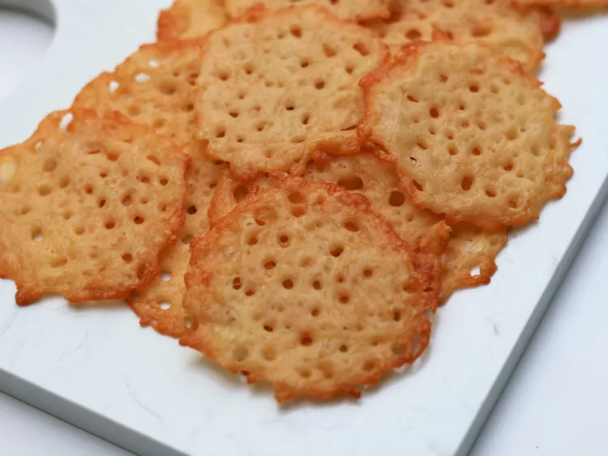

Parmesan Cheese Crisps
Return to home page

So, what is it?
Alright, check it out, we're diving into the world of Parmesan Cheese Crisps.
Imagine these little bites of heaven – it's like someone took the best part of a
pizza (yeah, that crispy cheese edge) and turned it into a snack. We're talking
about grated Parmesan, laid out on a baking sheet, and then transformed into
these crispy, golden masterpieces in the oven. It's the kind of snack that's so
good, it'll make you question why you haven't been making them your whole life.
Trust me, Parmesan Cheese Crisps are the snack revolution you didn't know you needed. Pure cheesy delight, my friend.
Ingredients
1 cup shredded Parmesan cheese
Steps
- Get that oven fired up, we're talking 400 degrees F (200 degrees C). Grab a baking sheet and dress it up with parchment paper or a silicone baking mat – we're about to make cheese magic.
- Armed with a tablespoon, go ahead and create 16 glorious cheese mounds. Make 'em about 2 inches in diameter, give 'em some space, like at least 1 inch apart, on that prepared baking sheet. Now, channel your inner artist and press down on the middle of each mound, making them beautifully even.
- Toss that masterpiece into the preheated oven and let the cheese work its magic. It's a quick trip – 4 to 6 minutes, just until the cheese is a melty dream and the edges are rockin' a golden brown vibe. Once it's out, give it a cool-down break for 15 minutes. After that, liberate those crisps from the baking sheet and stash 'em in an airtight container at room temperature. These babies will keep the cheesy party going for up to 5 days. Enjoy the crunchy goodness!
Return to home page